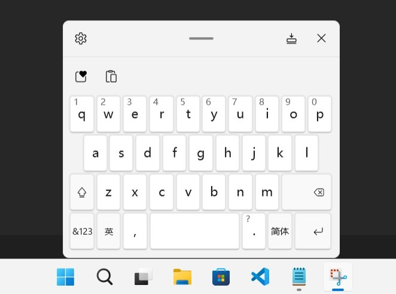

1. 背景
在 Windows 11 上, Microsoft 重新设计了虚拟键盘并修改了默认的行为. 根据测试, 有一个明确的条件会影响虚拟键盘的行为:
屏幕物理尺寸是否小于 18 英寸, 小于 18 英寸可以使用贴靠模式, >=18英寸屏幕上只能使用非贴靠模式;

贴靠模式 + 完整布局 (<18 英寸设备)

非贴靠模式 + 完整布局 (>=18 英寸设备)

非贴靠模式 + Small 布局 (<18 英寸设备唯一可用的非贴靠布局)
它们各有优缺点:
- 非贴靠模式下, 大部分程序不会自动调整输入框位置, 因此虚拟键盘可能挡住输入区域, 但可以自由拖动虚拟键盘来避开输入区域; 而贴靠模式下, 大部分程序的输入区域能自动调整, 避免虚拟键盘挡住输入区域.
- 非贴靠模式基本不会干扰应用程序工作: 比如 Remote Desktop 窗口, Terminal 窗口等; 而贴靠模式下, 弹出虚拟键盘将导致应用程序窗体大小发生变化, 有一些应用程序会受干扰.
- 18 英寸以下的设备非贴靠模式只能使用 Small 布局, 这个布局很糟糕 (Windows 11 22H2)!
- 18 英寸以上设备无法使用贴靠模式!
因此, 为了在 Surface Go 上使用分离模式 + 完整布局的键盘, 我们需要尝试让 Windows 11 认为 Surface Go 的屏幕对角线在 18 英寸以上!
Tip: 对于 Windows 10
Windows 10 也会使用 EDID 中提供的屏幕物理尺寸信息来调整触摸键盘的大小, 通过调整 EDID 屏幕尺寸可以变相实现 Windows 10 触摸键盘大小调节功能.2. 猜测 Windows 从何处获取屏幕尺寸
你可以在 PowerShell 中执行这条命令查看屏幕的物理尺寸, 返回数据的单位是厘米 (cm):
Get-WmiObject -Namespace root\wmi -Class WmiMonitorBasicDisplayParams | select InstanceName,MaxHorizontalImageSize,MaxVerticalImageSize
这个信息一个很可能的来源是从显示器中读取的 EDID 数据, 在 EDID 1.4 中, 有专门的字段用于存放屏幕的物理尺寸, 屏幕尺寸信息通常存放在 EDID Block 0 的 Basic Display Info 和 PTM block 中, 但 Windows 可能只通过 Basic Display Info 块来确认屏幕的物理尺寸.
3. 如何修改屏幕的 EDID ?
你可以在互联网上找到不少支持 EDID 1.4 规范的 EDID 编辑器, 编辑这些数据很简单, 但如何让 Windows 使用我们修改的 EDID 数据呢?
很幸运的, 你不需要任何第三方程序或者驱动就能轻松做到这一点:
Windows 提供了 EDID Override 机制,
Link: Microsoft docs - Manufacturer override of monitor EDIDs
因此, 我们只需要将修改后的 EDID Block 0 信息写入下述路径的 "0" 中即可(0 代表覆盖 EDID Base Block), 类型为 "REG_BINARY", 长度 128 字节.
HKEY_LOCAL_MACHINE\SYSTEM\CurrentControlSet\Enum\DISPLAY\%MONITOR_INSTANCE_PATH%\Device Parameters\EDID_OVERRIDE
我尝试使用 EDID 编辑器修改 0x15, 0x16 位置的屏幕尺寸信息, 并通过 EDID Override 注册表键来覆盖默认的 EDID, 在重启后, Surface Go 的触摸键盘终于可以使用非贴靠模式 + 完整布局了.
同时我也在外接显示器上进行了测试, 成功让 Windows 认为外部显示器只有 17 英寸大, 从而可以使用贴靠模式的触摸键盘.
4. 这是不完美的解决方案
由于我们修改 EDID 信息让 Windows 检测到了不真实的屏幕尺寸, 因此你将面临一些尴尬的情景:
- 一些利用屏幕物理尺寸来准确展示对象大小的应用 (虽然比较少见) 将获得到不真实的屏幕尺寸.
- 在登陆界面等不受用户 Hi-DPI 缩放设置影响的地方, 图标和文字等 UI 元素的大小可能过大或者过小.
- 只能选择一种状态: 比如 Surface Go 调整屏幕尺寸为 18 英寸后, 你将无法贴靠虚拟键盘到屏幕底部, 除非你删掉设置的 EDID Override, 但这需要重启设备才能生效.
但就算如此, 我也愿意使用不可贴靠的传统布局键盘, 因为对于我来说, 默认情况下, 分离模式只能使用的 Small 布局是低效, 可用性极低的一个布局.
最好的解决方案也许还是希望 Microsoft 在后续的版本中移除这个愚蠢的限制, 作为用户, 我知道自己需要什么, 而不是 UX 设计师觉得我需要什么!
此程序只支持修改 EDID 中的屏幕尺寸信息字段, 生成的 .reg 文件在导入您计算机前请先使用 Windows 记事本打开注册表文件查看内容, 检查没有错误内容后再导入您的计算机.
使用须知
您需要明白: EDID OVERRIDE 最糟糕的情况下可能导致您的设备不工作甚至损坏您的计算机, 这就是我们不提供一个 "exe" 文件让您点击一下就能轻松修改这些信息的原因. 您在使用此程序甚至任何 EDID 修改工具前, 必须对注册表编辑器, Windows 设备管理器, PowerShell 等基础系统管理员知识有充分了解才可开始操作, 若您暂不熟悉这些工具, 请向专业的系统管理员寻求帮助.
请注意: 您的计算机 OEM (设备制造商) 可能会指定 EDID OVERRIDE 的数据, 虽然这种情况较少见, 但一旦遇到, 您应小心操作检查 OEM 对您的显示器 EDID 做了哪些修改.
此应用程序不是专业的 EDID 编辑器, 虽然我们尽量避免其出现错误, 但您需要知晓程序仍可能生成错误的 EDID 数据, 您因使用此程序而造成的损失由您自行负责.
如何使用此应用程序
1. 导出 EDID 原始数据注册表文件.
先断开所有外部显示器的连接, 然后打开 PowerShell 执行:
Get-PnpDevice -Class "Monitor" -Status "OK" | ForEach-Object { $regfile=$([Environment]::GetFolderPath('Desktop') + "\" + $($_.Name) + '.reg'); Write-Host -NoNewline "Exporting $($regfile) : "; reg.exe export "$('HKLM\SYSTEM\CurrentControlSet\Enum\' + $($_.InstanceId) + '\Device Parameters')" "$regfile" /y}
你将看到类似的输出:
Exporting C:\Users\%USER_NAME%\Desktop\Integrated Monitor.reg : The operation completed successfully.
找到此注册表文件, 在后续步骤中使用.
2. 检查当前屏幕尺寸信息, 并记录, 便于在修改后确认是否修改成功.
3. 在编辑器中导入注册表文件.
在下方的编辑器中, 点击打开注册表文件, 选择导出的注册表文件.编辑器将自动提取此屏幕的物理尺寸, 最佳分辨率, 最佳分辨率下的图像大小等信息.
你需要确认这些信息是否正确, 尤其是屏幕分辨率, 否则将影响计算得到的屏幕尺寸, 若这些信息不正确, 请更换其他 EDID 修改工具或向我们提交 issue.
4. 设置新的屏幕尺寸信息
填写您期望的屏幕尺寸, >= 18 英寸时 Windows 11 将强制触摸键盘 undock, <18 英寸则可以使用 dock 模式.5. 下载 EDID Override 注册表文件
在你修改屏幕尺寸参数时应用将自动计算新的 EDID 数据, 您可以在下方的 hex viewer 中查看我们对 EDID 哪些字段做了更改.设置好期望的屏幕尺寸后, 点击下载 EDID Override 注册表文件按钮及移除 EDID Override 注册表文件按钮, 下载两个 .reg 文件.
- XXXX_EDID_OVERRIDE.reg 用于导入您设置的 EDID 数据;
- XXXX_EDID_OVERRIDE_REMOVAL.reg 文件则用于移除 EDID Override 设置.
6. 重启计算机应用设置
导入注册表文件后, 需要重启计算机, 重启后, 你可能会注意到 Windows UI 元素的大小可能发生了变化. 这是正常的, Windows 似乎根据屏幕尺寸和分辨率来确认 Hi-DPI 缩放的级别.尝试调用虚拟键盘, 观察是否成功影响其行为.
最后: 你通常可能需要重新调整 Windows 显示设置中的缩放级别 (Scale), 此时, 推荐的缩放级别可能不再有参考意义, 您需要设置为你觉得合适的级别.
比如: Surface GO 2, 调整前推荐的缩放级别为 150%, 调整 EDID 中屏幕尺寸为 18 英寸后, 推荐的缩放级别为 125%, 导致文本尺寸过小, 需要重新调整为 150%.
EDID 编辑器
显示器的原始 EDID 信息:
设备实例路径:屏幕物理尺寸 (Windows 将使用此信息): 厘米
PTM 屏幕尺寸: 厘米
显示器首选模式分辨率 (若识别错误请修改为正确的分辨率或使用其他 EDID 编辑工具):
设置新的屏幕尺寸参数:
Hex view
| 00 | 01 | 02 | 03 | 04 | 05 | 06 | 07 | 08 | 09 | 0A | 0B | 0C | 0D | 0E | 0F |
|---|
| 00 |
| 10 |
| 20 |
| 30 |
| 40 |
| 50 |
| 60 |
| 70 |